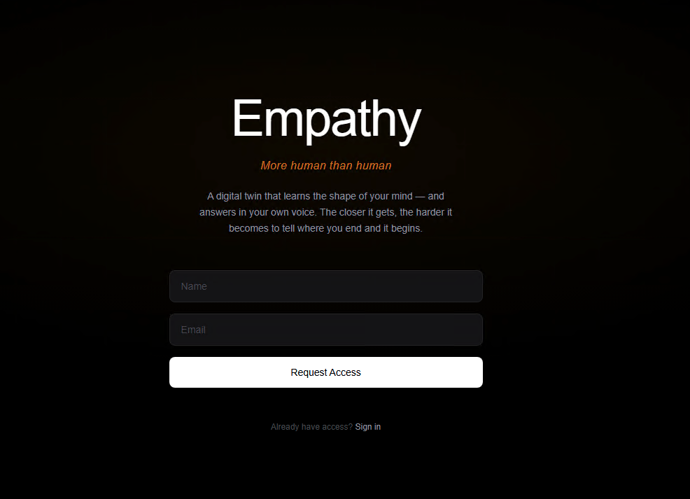

Empathy (Tyrell)
More human than human

AI companion with zero-knowledge privacy and layered long-term memory for Daimon — a guide for deep, reflective conversations over months and years, not a generic chatbot. Builds the user’s evolving “twin”: a faithful portrait of who they are (Blade Runner’s Voight-Kampff as founding metaphor).
- Zero-knowledge: client-side AES (DEK), dual-wrapped under passphrase + recovery questions — server never sees plaintext.
- Layered memory: inline observations, periodic profile synthesis, and structured recall — all client-side, feeding Daimon’s context.
- Production: GitHub Actions + Playwright E2E, post-deploy smoke tests with rollback, Postgres migrations, RLS, Resend email.